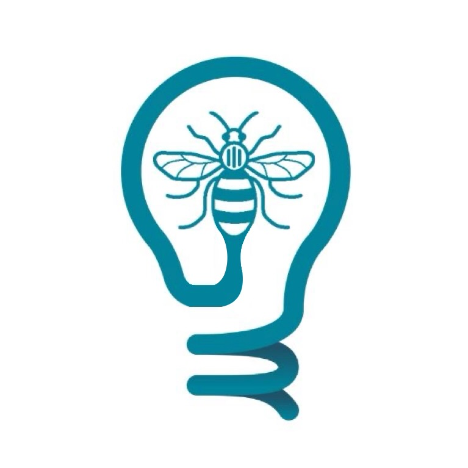

Effective Altruism Manchester
I spent two years on the committee of Effective Altruism Manchester, the University of Manchester's effective altruism society, including a year leading it.
2 → 10
Committee growth
£10,000+
Budget managed
2×
Society reach
Chair 2024 – 2025
- Ran the Intro and In-Depth fellowships end to end: processed hundreds of applications, placed fellows across up to six cohorts per semester, and recruited and supported facilitators.
- Managed a £10,000+ budget and built the group's website.
- Shifted the group from week-to-week running to semester-ahead planning, with onboarding simple enough for new volunteers to start fast.
- Grew and managed the committee from 2 to 10 and more than doubled the society's reach; mentored members, several now in high-impact roles.
Events Officer 2023 – 2024
- Doubled the number of talks hosted and grew event sign-ups from the low tens to over 100.
Visit the group at eamanchester.org.
